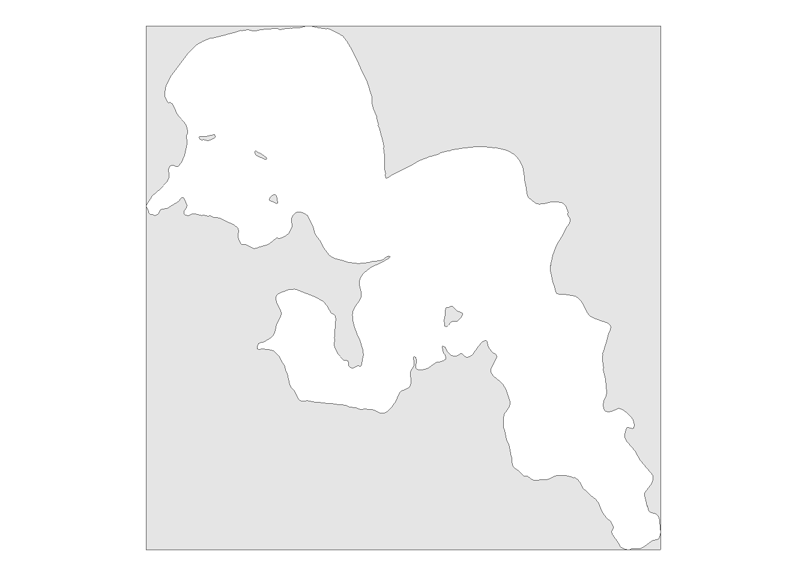
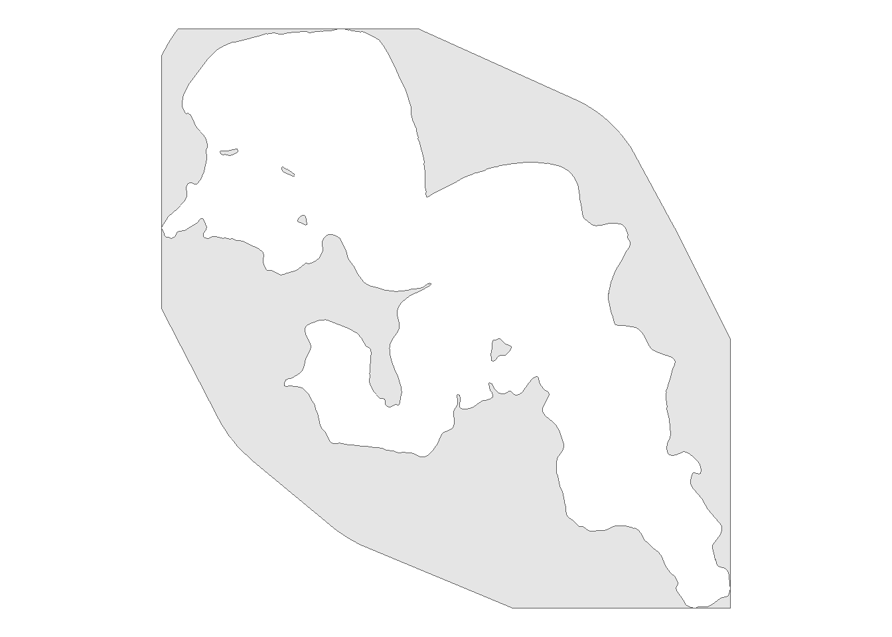
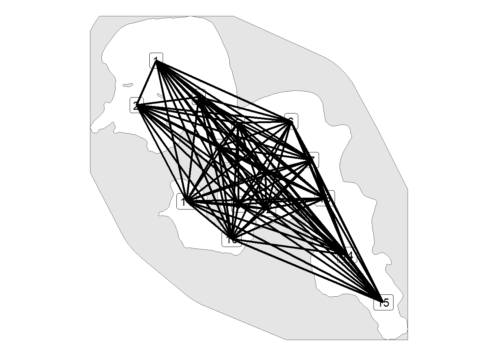
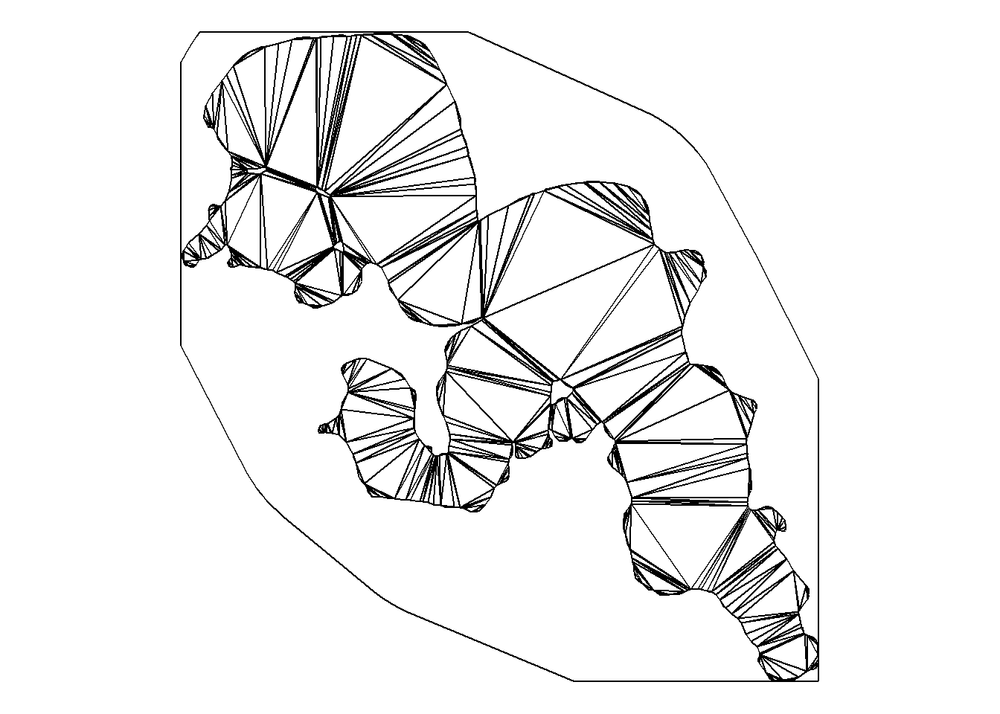
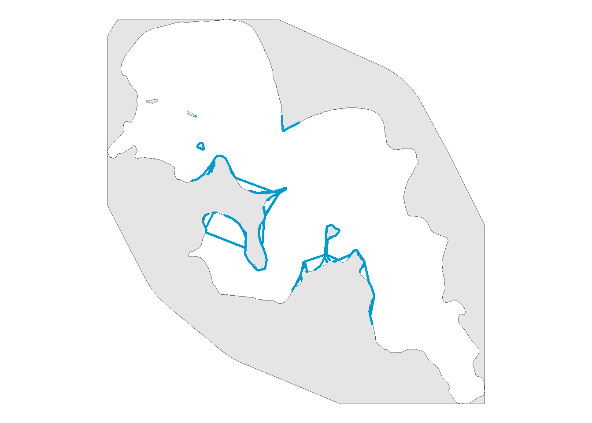
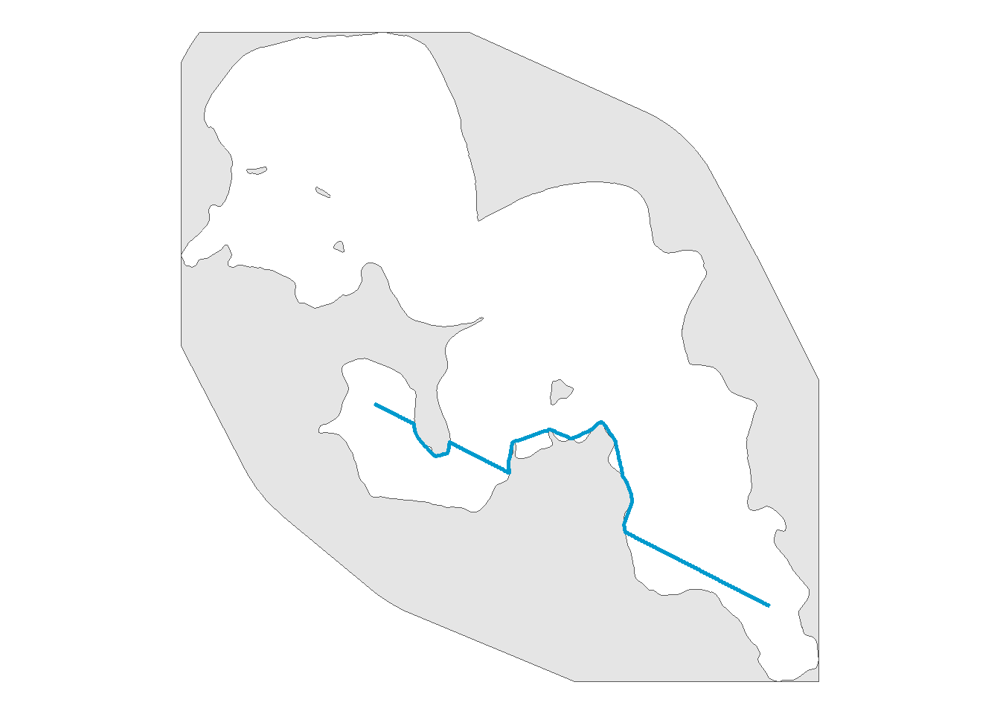
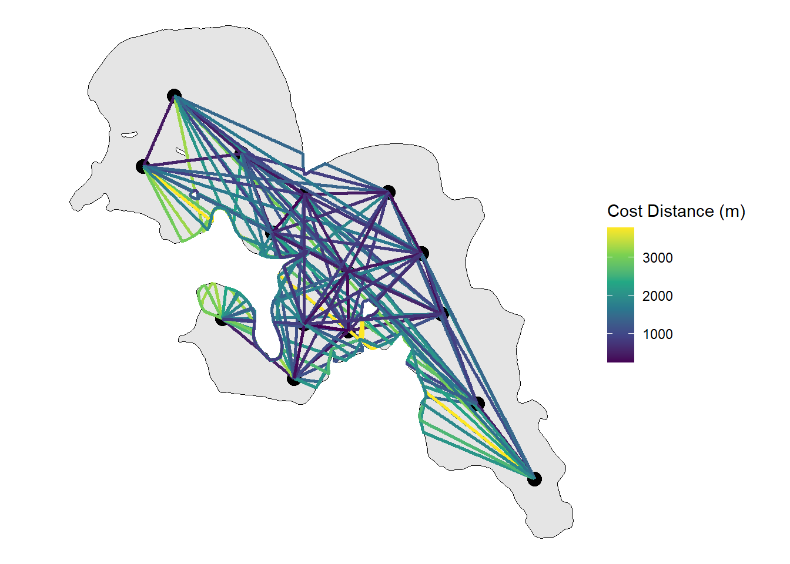

install.packages("usethis")
usethis::use_course("https://github.com/benjaminhlina/shortest_path_example/archive/refs/heads/master.zip")0.1 Our Objectives
The purpose of this vignette is to create the shortest distance among acoustic telemetry receivers within a confined boundary such as a lake, river, delta, or oceanscape. This workflow can be adapted to find the distance between any two points within a confined boundary.
Use this vignette with a bit of caution, as I found some inconsistency with this method when transferring it to other study systems besides this example study system.
Note, this method differs from the {gdistance} method as we are going to create a network graph to move throughout our study system and determine the shortest path. This vignette will start off the same as the {gdistance} method but will differ when creating the shortest paths.
You can download and unzip this vignette using the following code:
0.2 Load shapefile and receiver locations
We will first load all the packages we need, we will use {pathroutr} to find the shortest paths using {sfnetworks} and {sf} to find the distances of those shortest paths.
# ---- load packages ----
{
library(dplyr)
library(ggplot2)
library(ggspatial)
library(here)
library(igraph)
library(lwgeom)
library(pathroutr)
library(purrr)
library(readr)
library(sf)
library(sfnetworks)
library(sp)
library(tibble)
library(tidyr)
make_line <- function(lon, lat, llon, llat) {
st_linestring(matrix(c(lon, llon, lat, llat), 2, 2))
}
}We will bring bring in our shapefile. This vignette will use Big Sissabagama Lake as it is the lake I grew up fishing on in Wisconsin, USA. Please replace with the shapefile of your desired body of water.
lake <- st_read(dsn = here("Data",
"shapefile",
"."),
layer = "sissabagama_lake")Important that you convert to the correct UTM zone. For the vignette we are using UTM zone 15 N. Adjust your UTM zone accordingly.
lake_utm <- st_transform(lake, crs = 32615)We will then bring in our receiver locations. Replace rl_sum_sf with your receiver locations as a RDS or csv file type or whatever you use to document receiver locations.
rl_sum_sf <- read_rds(here("Data",
"receiver locations",
"rl_sum_sf.rds"))Convert to UTMs for plotting purposes and make sure you use the correct UTM zone.
rl_sum_utm <- st_transform(rl_sum_sf, crs = 32615)0.3 Invert shapefile for inland lakes and rivers
{pathroutr} was built with the intent of working on oceanscapes where the shapefile is land. For inland bodies of water the shapefile is usually water, therefore to get {pathroutr} to function we need to invert our inland lake or river shapefile
First we are going to get the extent of our shapefile which will be in UTMs
ext <- st_bbox(lake_utm, crs = st_crs(lake_utm)) %>%
st_as_sfc() %>%
st_sf()We then will invert our shapefile by using st_difference() from {sf}.
inverse <- st_difference(ext, lake_utm)We will check if we have correctly taken the inverse of our lake.
ggplot() +
geom_sf(data = inverse) +
theme_void()
0.4 Create land region to build our network
We need to create a buffered land region to use as a barrier. Within st_buffer() we will need to adjust dist argument to change the buffer distance to be adequate for the study system. For this example we will use 650 m.
land_region <- rl_sum_utm %>%
st_buffer(dist = 650) %>%
st_union() %>%
st_convex_hull() %>%
st_intersection(inverse) %>%
st_sf()We will check if we have correctly buffered our land region
ggplot() +
geom_sf(data = land_region) +
theme_void()
0.5 Create every combination of paths for every receiver
First we will convert receiver location which is a sf object to a tibble with each location combination.
prep_path <- rl_sum_sf %>%
mutate(
lon = st_coordinates(.)[,"X"],# grab lon
lat = st_coordinates(.)[,"Y"],# grab lat
) %>%
st_drop_geometry() %>% # drop sf
# once geometry removed create to and from lat longs
mutate(llon = lon,
llat = lat,
lonlat = paste0(lon, ",", lat),
llonllat = paste0(llon, ",", llat)) %>%
dplyr::select(-lon, -lat, -llon, -llat) %>%
expand(lonlat, llonllat) %>% # expand for each to and from combo
separate(lonlat, c("lon", "lat"), ",") %>%
separate(llonllat, c("llon", "llat"), ",")prep_path has all of the path combinations but we lose the names of the receivers and which paths go from one receiver to another. We are going to add that information back in by creating an object called rec_order
rec_order <- prep_path %>%
left_join(
rl_sum_sf %>%
mutate(
lon = st_coordinates(.)[,"X"],
lat = st_coordinates(.)[,"Y"]
) %>%
st_drop_geometry() %>%
rename(from = rec_name) %>%
dplyr::select(from, lon, lat) %>%
mutate(across(.cols = c(lon, lat), as.character)), by = c("lon", "lat"),
multiple = "all"
) %>%
left_join(
rl_sum_sf %>%
mutate(
lon = st_coordinates(.)[,"X"]
) %>%
st_drop_geometry() %>%
rename(to = rec_name,
llon = lon) %>%
dplyr::select(to, llon) %>%
mutate(llon = as.character(llon)), by = c("llon"),
multiple = "all"
) %>%
mutate(
from_to = paste0(from, "-", to)
) %>%
dplyr::select(from, to, from_to, lon, lat, llon, llat)Awesome! We have all of our combinations with their names and we now know which paths go from one receiver to another. Now we need to make each combination a linestring that we will sample points from to reroute.
Be sure to choose the correct UTM zone here. This vignette uses UTM zone 15 north but for other uses you will have to change the UTM zone.
path <- prep_path %>%
mutate(across(lon:llat, as.numeric)) %>%
pmap(make_line) %>%
st_as_sfc(crs = 4326) %>%
st_sf() %>%
mutate(
lon = st_startpoint(.) %>%
st_coordinates(.) %>%
as_tibble() %>%
.$X %>%
as.character(),
llon = st_endpoint(.) %>%
st_coordinates(.) %>%
as_tibble() %>%
.$X %>%
as.character()
) %>%
left_join(rec_order %>%
dplyr::select(from:lon, llon),
by = c("lon", "llon")
) %>%
dplyr::select(from:from_to) %>%
st_transform(crs = 32615) %>%
arrange(from, to)0.6 Sample points along path for {pathroutr} to reroute
Now that we have our paths we need to sample along the LINESTRING to get paths to reroute. I choose to have a sample distance of 5 m but you can change this depending on the study site.
We need to cast our sampled points as MULTIPOINT object for {pathroutr} to sample
path_pts <- path %>%
st_segmentize(dfMaxLength = units::set_units(5, m)) %>%
st_cast("MULTIPOINT")Important note, sometimes this sampling step results in points that intersect with the boundary of your land region which may cause issues with {pathroutr}. To fix this you will need to use the following code:
path_pts_fix <- prt_trim(trkpts = path_pts, barrier = land_region)Though for this vignette we will not use path_pts_fix.
We are going to visualize our paths, we could visualize the path_pts but this often takes awhile to process as the sample interval is 5 m and path_pts will be taken from our paths
ggplot() +
geom_sf(data = land_region) +
geom_sf_label(data = rl_sum_sf, aes(label = rec_name),
size = 4) +
geom_sf(data = path, linewidth = 1) +
theme_void()
0.7 Use get_barrier_segments from {pathroutr} to id path points that travel across landmasses in our lake.
lake_bar_seg <- get_barrier_segments(trkpts = path_pts,
barrier = land_region)0.8 Create network graph in our study system
Create a network graph that is bound by land_region and made up Delaunay triangles which are created in theory by looking from one point on one shore to directly across the study system until you hit a land object.
vis <- prt_visgraph(barrier = land_region)We can manipulate our network graph in several ways, the first is supplying the argument aug_points with the receiver location sf object. By doing so we add in triangles that will directly go to our receiver locations. Secondly, we can use the argument centroids to add additional points within our network.
Lastly, we can use the argument buffer to have paths be buffered from our land masses by a given distance in metres. We can visualize our network by first using the function activate from {sfnetworks}.
vis_graph_sf <- activate(vis, "edges") %>%
st_as_sf()
ggplot() +
geom_sf(data = vis_graph_sf) +
theme_void()
0.9 Create rerouted sections
Using prt_shortestpath we will reroute sections that go across land using our created network.
segs_tbl <- prt_shortpath(lake_bar_seg, vis, blend = TRUE)We can visualize these rerouted paths
ggplot() +
geom_sf(data = land_region, size = 0) +
layer_spatial(data = segs_tbl$geometry,
color = "deepskyblue3",
linewidth = 1) +
theme_void()
0.10 Update our paths to not travel across land
track_pts_fix <- prt_reroute(path_pts, land_region, vis)
track_pts_fix <- prt_update_points(track_pts_fix, path_pts)0.11 Convert points to linestrings to determine distance
track_pts_fixed <- track_pts_fix %>%
group_by(from_to) %>%
summarise(do_union = FALSE) %>%
st_cast('LINESTRING') %>%
ungroup() %>%
separate(from_to, into = c("from", "to"), sep = "-",
remove = FALSE) %>%
mutate(
cost_dist_m = as.numeric(st_length(.))
) %>%
filter(from != to) %>%
dplyr::select(from, to, from_to, cost_dist_m, geometry)0.12 Visualize our paths
First we will check if one route rerouted properly
# view one reroute to confirm pathroutr is rerouting
track_pts_fixed %>%
filter(from_to == "15-11") %>%
ggplot() +
geom_sf(data = land_region, size = 0) +
geom_sf(color = "deepskyblue3",
linewidth = 1) +
theme_void()
Next we will visualize the whole network and have colour be our distances
ggplot() +
geom_sf(data = lake_utm, colour = "black",
size = 1) +
geom_sf(data = rl_sum_utm,
size = 4, colour = "black") +
geom_sf(data = track_pts_fixed,
aes(color = cost_dist_m),
linewidth = 1) +
scale_colour_viridis_c(option = "D",
name = "Cost Distance (m)") +
theme_void() From here the sf object can be kept together or ripped apart to determine the distance or path a fish could swim within the system along with a whole host of other potential implications (e.g. interpolated paths).